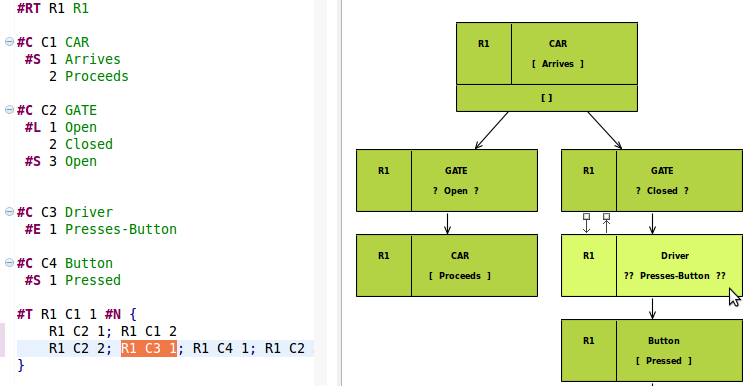
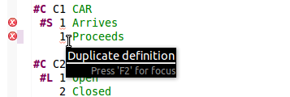
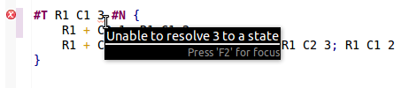
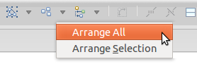
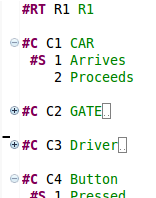
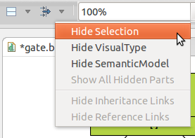
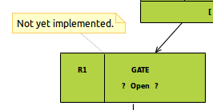
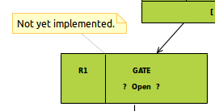

ComBE
Edit your Behavior Trees textually or graphically!
This project is maintained by oskarvanrest
ComBE
ComBE provides an integrated textual and graphical editor for Behavior Engineering, which keeps its textual and graphical views synchronized in real-time.
This screencast shows some of ComBE's highlights. Press 'full-screen' to get a good look. Click here for a somewhat older demo with narration.
Features
ComBE comes with a rich set of features...Easy Integration
ComBE is based on the same textual syntax that is used by other Behavior Engineering (BE) tools, such as TextBE and the SAL model checker. You can use your existing .bt files. ComBE can be installed (in Eclipse) next to TextBE and you can easily switch between the tools.
Furthermore, ComBE uses EMF to maintain your BE models, which means that you can easiliy connect it with other tools that are based on EMF.Real-time Synchronization
The textual and graphical views are synchronized in real-time and you can easily switch between textual and graphical editors at any moment in time.Selection Sharing
When you select a node in the diagram, the corresponding text will be highlighted, and vice versa. So even if you prefer textual editing over graphical editing, you can still use the graphical editor to quickly look-up parts of your model and then switch to the textual editor to do the actual editing.

Error Checking
ComBE lets you know about syntax errrors in your .bt file, but it also tells you when there are duplicate definitions or unresolved references.
 
Reference Resolution
By holding Ctrl and clicking on a reference in the .bt file, your cursor will move to its definition.
TODO: picture
Layout and Auto-layout
You can position the nodes in your diagram as you like, and possibly use grid-snapping. Or, you can use the auto-layout feature, which also allows you to only auto-layout part of your Behavior Tree.

Printing and Exporting
Diagrams can be printed directly from Eclipse. It's also possible to export your diagrams as GIF, BMP, JPEG, JPG, SVG, PNG or PDF.Visual Hiding
Both textual and graphical editors provide ways to visually hide parts of your model. Code Folding allows you to hide the states of components in which you are not interested at a particular moment in time. Hiding of a selecton of nodes in the diagram is useful if you want to print part of the Behavior Tree only.
 
Comments and Sticky Notes
ComBE provides two ways of adding additional information to your model. You can either add comments to your code, or add sticky notes to your diagram.
 

Zooming
And more...
- Code Completion (soon)
- Code Colouring
- Bracket Matching
- Auto Indentation
Download
ComBE is (in a few days!) integrated with TextBE and the SAL model checker and can be downloaded by pointing your Eclipse update manager to http://itee.uq.edu.au/~jgsuess/updates/textbe
Documentation
Documentation to be added soon.
Development
See poster.
Issue Tracking
Bugs and features/improvements are maintained by YellowGrass: http://yellowgrass.org/project/ComBE
Contact
For things that do not belong on YellowGrass, please contact me at oskarvanrest@gmail.com.